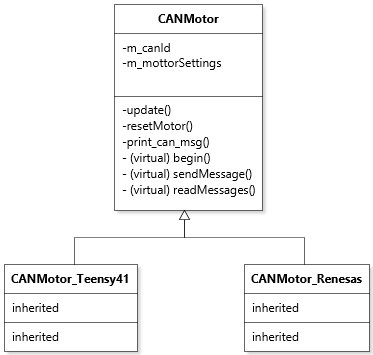
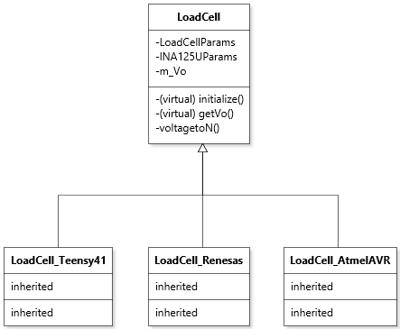

Software layout for the project
CANMotor class
The CANMotor class is the main class used to interface the motor.
As of now because we are having issues interfacing the encoders with the Teensy over SPI (voltage conversion related) I gave the possibility
for the user to control the AnkleExo PCB using 1) the Teensy and 2) with the Arduino Uno R4. It is necessary to split the implementation for the Uno R4 and the Teensy 4.1 because these two boards use different CAN Controller libraries.
The Arduino uses Arduino_CAN.h while the Teensy currently uses FlexCAN_T4. For that reason I created two subclasses for each board so that one can use one or the other board as they wish.
Note that because only the Teensy 4.1 and Arduino UNO R4 boards have an integrated CAN controller other regular boards like the Arduino UNO R3 cannot be used for this class.
For the wiring, please refer to board.h and the electrical section of this documentation. It differs from board to board.
A representative OOP diagram of the CANMotor class and it's two subclasses CANMotor_Teensy41, CANMotor_Renesas is shown below

To run the unified CAN controller example code (CAN_unified.cpp) you will need to run the pio environment CAN_teensy41 or CAN_uno_r4 depending on which board you are using.
As a reminder, the general format to run an environment in platformio is pio run -e yourenvname where yourenvname is the target environment.
Design update (25/06)
After the Servo mode was successfully tested on June 24th we are now implementing a separate class for the MIT and Servo mode. Those supercless are CANMotorMIT (MIT mode) and ServoCANMotor (Servo mode). Note that these two classes need to been validated again
| Class | Mode | Board | Platformio Environment |
|---|---|---|---|
CANMotorMIT_Teensy |
MIT | Teensy 4.1 | pio run -e MIT_CAN_teensy41 |
CANMotorMIT_Renesas |
MIT | Arduino Uno R4 | pio run -e MIT_CAN_uno_r4 |
ServoCANMotor_Renesas |
Servo | Arduino Uno R4 | pio run -e Servo_CAN_uno_r4 |
ServoCANMotor_Teensy |
Servo | Teensy 4.1 | NOT IMPLEMENTED YET |
The following commands can be run (rightmost command) to execute the MIT/Servo demo code on the Teensy/Arduino Uno R4. Note the following :
-
You must wire the CANTX/CANRX wires accordingly to the Teensy or Arduino UNO R4.
-
For the Arduino
| OpenExo PCB | Arduino |
|---|---|
| CANTX through voltage divider | D10 |
| CANRX | D13 |
| GND | GND |
| 3.3V | 3.3V |
- For the Teensy
| OpenExo PCB | Arduino |
|---|---|
| CANTX | D22 |
| CANRX | D23 |
| GND | GND |
| 3.3V | 3.3V |
Serial communication
The serial communication to control the motor works as follow :
MIT mode

\(c_{ff}\) value is usually the sum of the current required to offset the friction of the actuator and the current value calculated by the robot dynamics
When the kp and kd values are both 0, the rotational stiffness and damping are both 0, which is equivalent to the current mode, and the phase current can be directly controlled:
Increasing the feedforward torque \(c_{ff}\) will offset the necessary torque to overcome the static friction. As a consequence the motor is set into motion easier.
References from sito drive for the MIT actuator control mode
Note : setting kd to wero will make the motor oscillate about the target position which is not recommended
start id xx: start the motor-
To enable the control loop, after a "crash" wherein the motor disables itself after a fault was detected
-
stop id xx: disable the control loop (the motor is in idle mode, and keeps sending telemetry data but there is no actuation. note you can still set MIT parameters) -
To exit idle mode, enter the
startcommand. -
zero id xx: resets the motor's encoder position to 0 at the current position.
set | id xx:
pos x.x: position (in radians from -12.0 to +12.0)vel x.x: velocity (in radians/s from -45.0 to +45.0)kp x.x: proportional gain (for position)kd x.x: derivative gain (for velocity)trq x.x: feedforward torque (be careful with it when using the motor with no load attached to the shaft as it will spin freely while accelerating)
Note that the order the parameters are given does not matter. One / more parameter can be updated at once
Servo Mode
set | id xx :
duty x.x: set duty cycle modecurrent x.x: set current mode (proportional to torque T = kI)brake x.x: set brake current moderpm x.x: set rpm modepos x.x: set position modepos x.x rpm x.x acc x.x: set position velocity acceleration loop mode-
origin 0: set encoder origin -
Note that only ONE mode can be active at a time (WAIT MAYBE NO ACTUALLY?)
